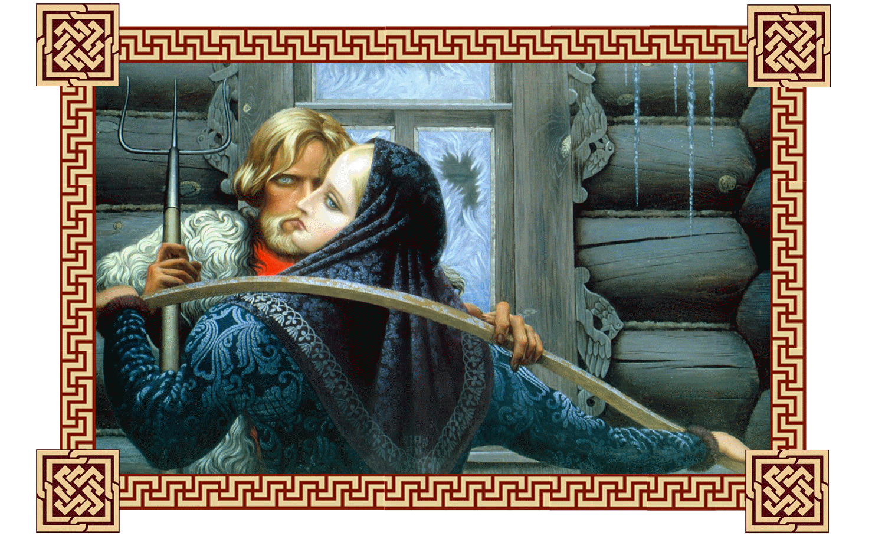
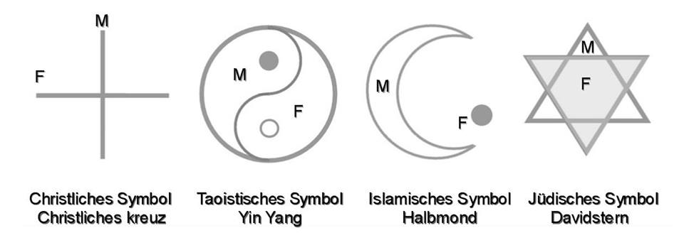

Zwei große Anfänge - zwei Urenergien: weiblich und männlich und die gegenseitige Beziehung zwischen Mann und Frau.

Um zu existieren, hat sich das Große Einheitliche Ganze – der Raum der Vernunft – auf zwei Hälften in männlichen und weiblichen Anfang geteilt. So ist der männlicher, sowohl auch weiblicher Verstand mit ihren eigenen Qualitäten erschienen. Diese zwei Kräfte, wo jede von ihnen über die eigenen Qualitäten und Eigenschaften in einheitlichen Raum der Vernunft verfügt. Über die gleichen Qualitäten verfügen sie, wie innerhalb des Menschen, als auch in der Umgebung. Diese Kräfte sind dynamisch, wenn sich der männlicher und der weiblicher Anfang treffen, entsteht das einheitliche Ganze und mit ihm auch das Leben. In jedem Menschen sind männlicher und weiblicher Anfang enthalten, gerade deshalb existiert der Mensch als Ganzes, so wie das Leben. Jeder Mensch im seinem Inneren weiß, was die Liebe ist, sie ist die Einheit. Der Mann - der Himmel, die Vertikale, die Härte, das Feuer, die Kraft u.s.w. Die Frau - die Erde, die Horizontale, der Kreis, die Weichheit, das Wasser, u.s.w. Wenn diese Qualitäten, die in jedem der Anfänge enthalten sind, bestimmt werden, erscheinen die Gefühle und wenn die Gefühle erkannt werden, befinden sich der Mann und die Frau in den gegenwärtig entsprechenden Strömen der Energien und werden sichtbar.
In unserem Leben auf der Erde aber auch im Universum existieren zwei große Anfänge, männlicher und weiblicher Beginn oder männliche und weibliche Urenergie. Und jene sind gegenwärtig in ihre Harmonie gestört. Da die Weden vergessen wurden, wird diese Lehre nicht in den Familien, Kindergärten, Schulen und Universitäten gelehrt. Was tut eine Frau, was tut ein Mann, wie kann man die Beziehung aufbauen und woher kommen die Probleme in die Familie.
Seit den alten Zeiten ist das Wesen dieser zwei Arten von Energien bekannt und dass, das ganze Universum grundsätzlich aus zwei Kräften besteht: der weiblichen passiven Energie und der aktiven Männerenergie. Der weibliche Anfang empfängt die kosmische Energie und der männliche Anfang verwirklicht sie durch die Handlung in unserer Welt. So verwirklicht sich der schöpferische Prozess.
Jene Energien sind der männlicher und das weiblicher Prinzip im Gott - das Wesen zweier Pole des Daseins und stellen seine zwei entgegengesetzten Seiten oder zwei Ströme der Energie - negative und positive Energie dar und werden in der Erscheinungsform aller darin enthaltenden Formen widergespiegelt.
In allen Religionen und ihren symbolischen Zeichen wurden diese großen Uranfänge festgehalten und als folgende Symbole (Abb.1) dargestellt.

Abb. 1
In der wedischen russischen Rede einzig und des Plurals auch existiert die zweifache Zahl, d.h. die Bedeutung des Wortes – ein PAAR. Ein beliebiges Paar meint zwei verbundene miteinander Gegenteile. Das heißt die Einheit der Gegenteile. Die zweifache Zahl bedeutet, dass der Mensch von der Existenz des Gegenteiles IMMER weiß und in den Handlungen IMMER beachtet sie, VON NE± СВОЁ die Existenz ABZÄHLEND. Es als ob machten Sie etwas neben dem Abhang und immer beachteten seinen Rand. Das heißt die Lage, die Zeit, die Handlungen, die die Sachen umgeben, das Verhalten der Menschen, zählen Sie das eigene Verhalten vom Gegenteil immer ab. Was es gibt? Die Empfindung der Zuverlässigkeit und der unerschütterlichen Stütze. Die Annahme des Gegenteiles und die Stütze auf sie geben die Kraft. In der zweifachen Zahl wird es verstanden und wird wie der Einheitliche Ganz des Mannes und der Frau betrachtet, von hier aus heißt im Russischen - der Fußboden – den Fußboden (der Frauen. Der Fußboden und der Mann. Den Fußboden), darunter die Hälfte dieses Ganzen meinend. In dieser Bedeutung schufen der Mann und die Frau zusammen, man kann «Hand in Hand» sagen.
Was geschieht, wenn sich die Einheit der Gegensätze sich verliert? Oder sagen wir, wenn der Mensch eine Hand verliert? Die Kraft der fehlenden Hand geht in die bleibende Hand über. Es geschieht die Kompensation und die bleibende Hand wird bedeutend stärker sein.
Als der Mann sich von der Frau getrennt hatte, hat sich das Männerverstand-Ego ungewöhnlich gesteigert. Die Kraft des Lebens, die er aus der Einheit mit der Frau schöpfte, hat ihn verlassen. Deshalb ist der männliche Anfang geschwächt. Der Mann hat teilweise sein linearer Verstand verloren und hat den teilenden rationalen Verstand erworben. Anstelle früher in ihm existierenden nichtlineare Verstand, der die Frau verkörperte, hat der Mann die Ängste erworben. Gerade diese machen ihn schwach.
Als die Frau sich vom Mann getrennt hatte, hat sich das weibliche Verstand-Ego ungewöhnlich gesteigert. Die Kraft (das Feld) des Lebens, das sie aus der Einheit mit dem Mann schöpfte, hat sie verlassen. Und deshalb hat der weibliche Anfang abgenommen. Die Frau hat teilweise den nichtlinearen Verstand verloren. Anstelle früher in ihr existierenden linearen Verstand, auf den sie sich stützten könnte, hat die Frau das Gefühl der Schuld, das Gefühl des Opfers und die Ängste erworben. Die Schuld, die Erniedrigung, die allgemeine Verachtung der Männer und die Ängste machen Frau nicht selbständig und abhängig.
Es ergibt sich, dass wenn das Äußerliche von Inneren und umgekehrt abgetrennt wird, verstärkt sich das Ego-Verstand und schließt den Menschen im Egomodus ein. Der Mensch landet im eigenen "Schnellkochtopf". Die Kraft des Lebens, die der Mensch von der Stütze (seine zweite Hälfte) bekam – hat ihn verlassen. Was den Menschen schwach gemacht hat.
Wenn sich der Mann oder die Frau in Energien der Großen Uranfängen verlieren, führt es zu Problemen: die Einsamkeit – Mono, von hier aus ist der Ausdruck Dämonismus, d.h. das Vorherrschen nur einen Art an Energie. Wenn nur die männliche Energie vorwiegt, so führt es zum Krieg, Despotismus und Diktatur. Und wenn nur die weibliche Energie vorwiegt, so führt es zum Chaos, Magie und Intrigen. Daraus resultieren sich alle Krankheiten des Geistes, des Körpers und der Seele.
Der Mensch ist in diesen Leben gekommen, um zu lernen und um die harmonischen Beziehungen in der Familie und mit der Welt aufzubauen. Die Wechselbeziehungen in der Familie zwischen der Frau und dem Mann durch die richtig aufgebauten lebenswichtigen Werte sind jene schöpferische Grundlage, die die Entwicklung der Menschheit gibt ist eine Liebe und die Harmonie des Lebens, wie die Grundlage des Schaffens auf der Erde.
Jede Seele kommt auf die Erde mit der Hauptaufgabe - die Liebe zu lernen. Ein Ziel und die Vielzahl von Wege für ihre Errungenschaft. Die Liebe zu lernen in den Beziehungen, durch den Umgang mit der Umwelt. In esoterischen Kreisen ist es üblich zu meinen, dass unsere Seele sich selbst die Eltern wählt nach den entsprechenden jenen wertvollen und nützlichen Aufgaben, die ihr bevorstehen. Von unseren nächsten Umgebung - unsere Familie - die Eltern, die Brüder und die Schwestern, die Großmutter und der Großvaters, die Tante und der Onkel, hängt unsere und ihre Zukunft in vieler Hinsicht ab. Da jeder von ihnen die besondere Rolle in der Erschaffung unserer Gewohnheiten, des Charakters, der Weltanschauung eine wichtige Rolle spielt. Mit anderen Wörtern, in der Erschaffung jenes Raumes der Liebe, in dem unserer Seele bis Maximum sich öffnet und sich realisiert.
- Die große Energie der Liebe - vom Gott für seine Kinder gesendet auf die Erde, sie kommt zu jedem überraschend. Es kommt oft vor, dass sie nicht nur einmal Mal kommt und strebt den Menschen mit sich zu wärmen und auch für immer bei ihm zu bleiben. Aber die meisten Menschen lassen es nicht zu, dass die große Energie des Göttes bei ihnen bleibt. Stelle dir vor, es treffen sich einmal im Glanz der schöne Liebe „sie“ und „er“. Sie streben ihre Leben auf ewig zu verbinden. Sie meinen, dass ihr Bündnis fester sein wird, wenn es auf dem Papier mit Ritual aus vielen Zeugen besiegelt wird. Aber ist vergeblich. Die Tage gehen hin, die Energie der Liebe verlässt sie und es ist fast bei allen so.
- Ja, du hast recht, Anastasia. Es trennen sich ganz viele Menschen. So ca. siebzig Prozent. Und es gibt noch solche, die zusammen geblieben sind aber sie leben wie Hund und Katze oder in der Gleichgültigkeit zu einander. Es ist allen bekannt, aber warum geschieht dann solches in der Massenordnung, ist niemandem genau klar. Du sagst, die Energie der Liebe verlässt sie, aber warum? Als ob sie alle neckt oder sie spielt ein irgendwelches Spiel?
- Die Liebe neckt niemanden und spielt auch nicht. Sie strebt mit jedem ewig zu leben, aber der Mensch wählt mit seiner Lebensweise und genau diese Lebensweise erschrickt die jene Energie der Liebe. Die Liebe kann nicht ihre Eingebung der Zerstörung schenken. Der Frucht der Liebe schickt sich nicht in den Qualen leben, wenn er und sie beginnen gemeinsam das Leben auf zu bauen. Wenn sie versuchen diese in der Wohnung, wie in den leblosen steinernen Gruft eifrig anzusiedeln. Wenn jeder seine Arbeit, eigne Interessen und eigene Umgebung hat. Wenn keine gemeinsame Schöpfung und Antrieb für die Zukunft gibt. Wenn sich die Körper nur für die flache Freude interessieren, damit sie später ihre Kinder für den Missbrauch der Umwelt übergeben, in der keines reines Wasser gibt und die Banditen, die Kriege und die Krankheit gibt. Deswegen geht die Energie der Liebe weg.
W. N. Megre, "die Schöpfung" - Band 4
aus der Serie "Klingende Zedern Russlands"
Aus dem Verständnis vieler moderner Menschen ist die Bedeutung; starker Geschlecht, starker Stamm und die feste Familie verschwunden. Das Bewusstsein im Verständnis Erhaltung des Geschlechtes (des Familienstammes) und seiner Reinheit ist stechengeblieben. Eigentlich, ist das die Hauptgrundlage der Existenz des Geschlechtes der Menschheit, so wie weiter leben in seiner Fortsetzung.
Wir bieten hier an, das das Wesen zu verstehen, das unsere Urahnen verstanden und wussten, dass die Liebe, die Eintracht, das Einverständnis, die Freude und die gegenseitige Anerkennung eine wahrhafte Harmonie ist. Diese tritt dann in Erscheinen, wenn es die Einheit der Gegensätze (männlich und weiblich) gibt. In den wedischen Zeiten war das alles vorhanden. Und bis heute werden wir von dem geltenden energetischen universellen Kanon (Richtlinie) unterrichtet. In diesem sind die geistig-moralischen Prioritäten für innere und äußere Welt des Menschen konsequent aufgebaut. In dieser Welt auf dem ersten Platz steht: – die Einheit des Geschlechtes, das heißt:
- Die gegenseitigen hellen und reinen Beziehungen der Eheleute im gemeinsam erschafften Raum der Liebe: Raum der Freude, des Wohlergehens, des Glückes, der Güte, des Erfolges und Erblühens - eine Familie.
- In der Liebe Zeugung der Kinder.
- Die Ehrung und die Achtung der Eltern, der Verwandten, die man nicht auf gut und schlecht aufteilt, da sie alle vom einheitliche Geschlecht sind und das die Zeit kommt, wo jeder Mensch sich wieder im Familienstamm verkörpern muss.
- Die Lieblingsbeschäftigung – die im ihren Wirken für das Wohl der Familie, seines Familienstammes, seiner Gemeinde, seinem Land dient.